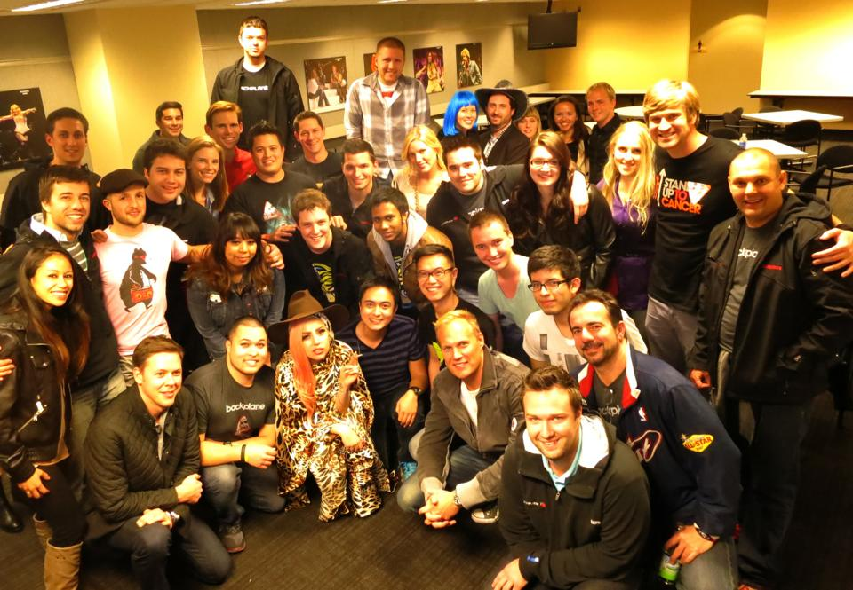
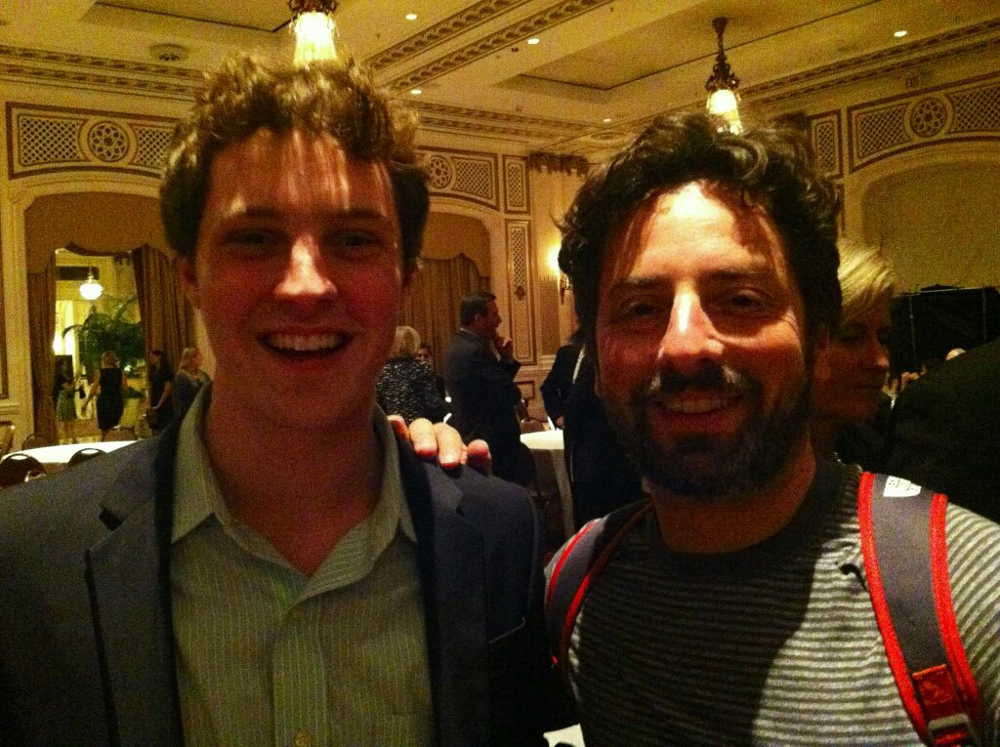
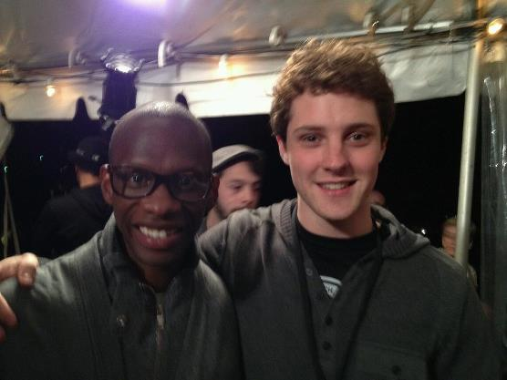

I dream things up and build them.
I started 2 companies while studying Computer Engineering at UIUC, left school to join Backplane, and love UX, psychology, and engineering.
More about meWriting
- PRISM: A Final Blow To Functioning Democracy? 11 Jun 2013
- Training like Tesla: An Experiment of the Mind 12 Apr 2013
- The New Facebook News Feed: A UX Breakdown 07 Mar 2013
- Lets Stop Generalizing 25 Feb 2013
Timeline
-
MAR 13'
Won Paypal and Youtube API 1st prize at SXSW Artists' Hack
I coded the first MVP verson of WeBrowseInPublic.com in Austin, TX. Paypal awarded me 1st prize for the most monetizable app. Youtube had the barebone requirement of using their API, which was ridiculously easy.
-
FEB 12'
Started advising Claco.com
-
AUG 11'
Joined Backplane
First engineering/product hire. I had to drop out but determined it was worthwhile pretty quickly.
-
MAY 11'
Joined Piazza
I quit a consulting internship in Chicago on day 3 (pretty awkward) to come to the valley. I worked on UX and growth hacking -- we went from 30,000 users to 100,000 in under 3 months.
-
MAR 11'
Won the 2011 Cozad New Venture Competition
1st place in the Midwest's largest startup pitch/business plan competition, beating out 100+ other teams.
-
AUG 08'
Started Instarta
My first company.
-
AUG 08'
Began Studying Computer Engineering at UIUC
-
NOV 04'
Developed my first internet product
I built an RSS aggregator for news. You could create accounts, share news across email, and make custom feeds. Pretty cool stuff for having just learned PHP! I shut it down after Google Reader came out.
-
See more...
Photos
- 
- 
- 
-